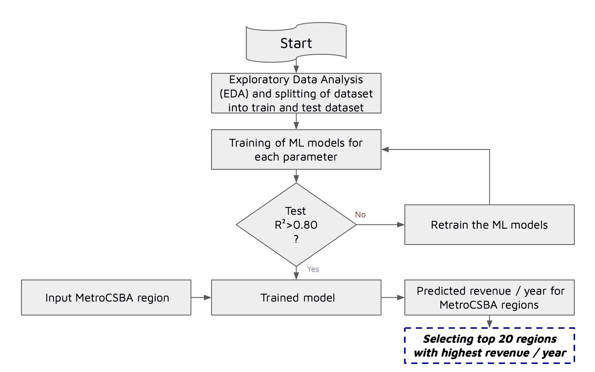
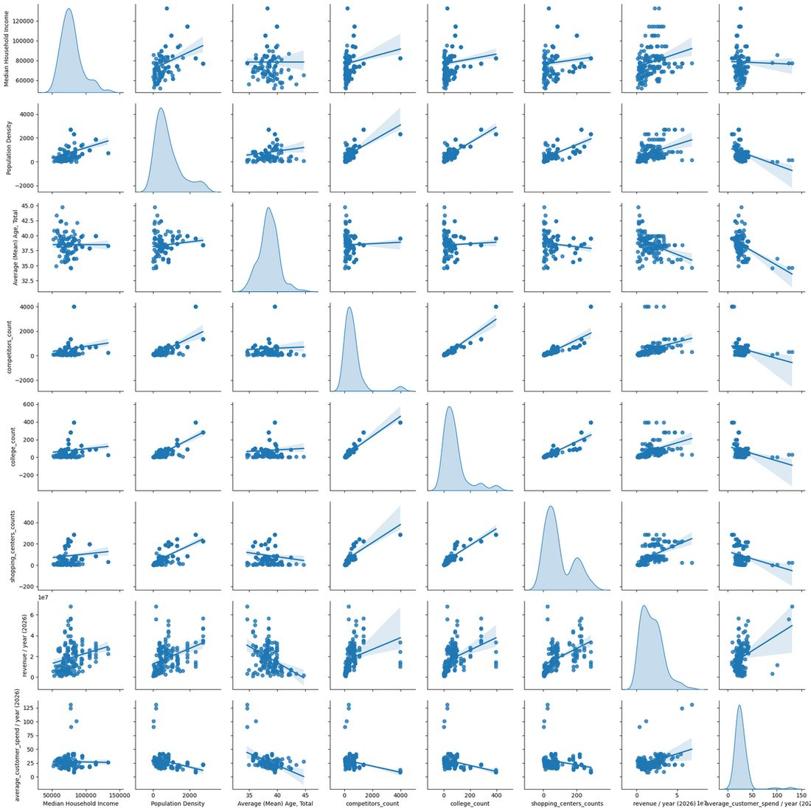
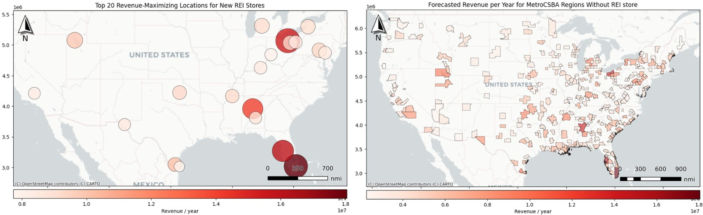

Spatial analysis · retail site selection
Identifying Store Expansion Locations with Location Intelligence
Retail site selection is usually decided on intuition and partial information. This study replaces that with geospatial data enrichment and a revenue model, ranking every US metro region without a store and returning the twenty worth opening in.
- Role
- Sole analyst
- Unit of analysis
- Metro CBSA regions
United States - Features
- 6 socioeconomic
& point-of-interest - Model
- Random Forest regressor
100 trees · 80/20 split - Result
- 0.83 test R²
Top 20 locations ranked
The problem
Choosing where to open a retail store is a hard question dressed up as a simple one. The answer depends on customer demographics, on where competitors already sit, and on what surrounds the site — and in practice the decision is often made on guesswork or on whatever information happened to be at hand. The alternative is to treat the question as what it actually is: a spatial one.
Objectives
- Integrate and analyse geospatial and socioeconomic data to assess market potential across regions.
- Train a model that learns the relationship between regional features and commercial performance, and use it to predict high-potential locations.
- Visualise the results as maps, so the recommendation is legible to the people who have to act on it.
Workflow
Five stages, from choosing what to measure through to naming the regions worth opening in.
Data enrichment
The independent variables are a mix of census-style attributes and counts derived from point data. Colleges, universities, competitors and shopping centres arrive as individual locations, so each point layer is spatially joined onto the Metro CBSA polygons and aggregated to a per-region count — turning scattered points into a regional attribute the model can use.
| Feature | Type | Source form |
|---|---|---|
| Median household income | Continuous | Regional attribute |
| Population density | Continuous | Regional attribute |
| Average (mean) age | Continuous | Regional attribute |
| College count | Count | Point layer, spatially joined |
| Shopping centre count | Count | Point layer, spatially joined |
| Competitor count | Count | Point layer, spatially joined |

Choosing the target
Two candidate target variables were available, and the exploratory analysis decided between them rather than assumption doing it.
- Average customer spend per year was rejected. Its correlation with the independent variables was weak and negative — there was no signal for a model to learn.
- Revenue per year was selected. It correlated strongly and positively with the independent variables, which also served to validate the deductive reasoning that picked those features in the first place.
Two findings worth keeping
- Average age correlates negatively with revenue — younger populations are associated with higher revenue, which is a directional result a site-selection team can act on directly.
- Competitor count correlates positively with revenue, contrary to the initial expectation that competitors would depress it. Rather than discard the variable for disagreeing with the prior, it was retained — competitor presence appears to mark proven retail demand rather than saturated supply.

The model
A Random Forest regressor with 100 estimators, trained on an 80/20 split. The methodology gates on test performance: a model that fails to clear R² > 0.80 on unseen data is sent back to be retrained rather than carried forward into prediction.
| Metric | Score | Reading |
|---|---|---|
| Training R² | 0.87 | The model explains 87% of the variance in the training data, having learned the pattern between regional features and revenue. |
| Testing R² | 0.83 | Held up on unseen data, confirming the relationship generalises rather than being memorised. The narrow train-test gap indicates the fit is not overfit. |
Results
The trained model was applied to every Metro CBSA region that does not currently have a store, producing a nationwide forecast of the potential market rather than a shortlist assembled by hand. Regions across the Southeast, the Northeast and parts of the West forecast strongly, several exceeding $10M–$18M per year.
The final twenty were then selected from that full forecast by predicted annual revenue. They are geographically diverse, clustering in the Southeast and Northeast with the remainder spread across the West and South-Central states.

Conclusion
Combining location-based data enrichment with machine learning identified high-potential regions reliably enough to base an expansion shortlist on — the spatial join is what turns scattered points of interest into features a model can actually learn from.
Where it goes next
The current model treats each region as an independent row of attributes, which leaves the geography on the table. A spatially aware model — one that exploits the distribution of the data points themselves rather than only their aggregated counts — should capture location-based effects such as regional clustering and spillover between neighbouring markets, and improve predictive accuracy with them.